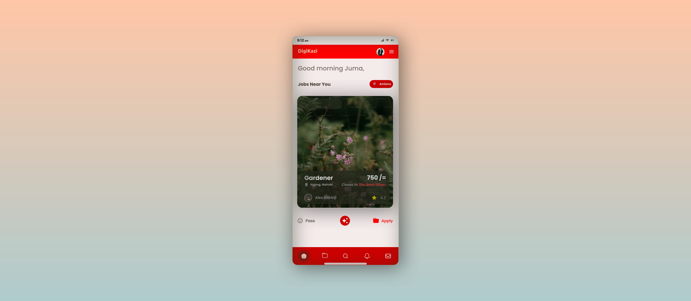
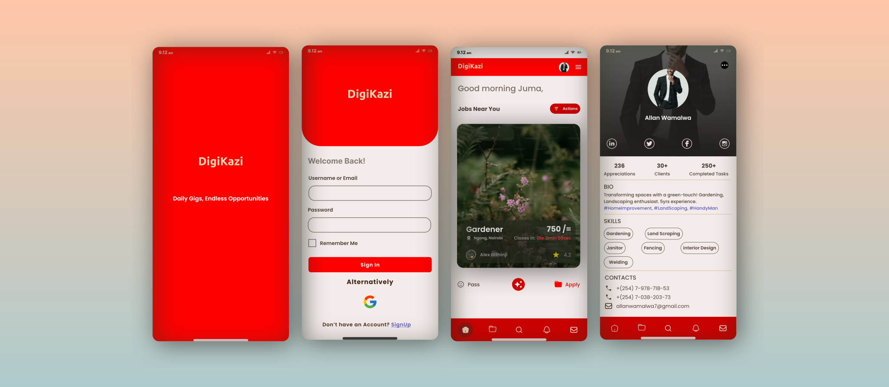

Mobile Application
Interaction & Visual Designer
Adobe XD, Framer
March 2021- August 2021

DigiKazi is a mobile application developed by ICONS Hub Kisii Developers team as a digital solution to cub the rising unemployment rate.
Research done by several organizations shows that there is scacity of formal (white colar) jobs. This has resulted to many people to shift to informal job market to counter the global rising cost of living. The informal job market pool is also flooded. There is a need for a realtime digital solution that ease the entire process of job search, and "Boss ‐ Client" connection.
Currently, for someone to get informal job or gig, Bosses call clients they know. Suppose the clients are preoccupied, unreachable or sick, the Boss is left without alternative. Similarly, there is a huge number of people who can offer similar service but they are disadvantageous because Bosses do not know them. There exist a connection barrier between Bosses and clients.
In order to gain insights and understand the overal process of informal jobs or gigs aquisition, we assumed the roles of Labourous seeking informal opportunities. We collected both qualitative and quantitative data. In addition, ICONS Hub had partnered with a number of individuals and organizations that provided us with data and some libraries to implement during product design.
Bosses
The goal is to understand the criteria they use to award informal jobs and gigs. Similarly, how they mantain the long-term relationship with their clients.
Labourous
Their aim is to get informal opportunities and future referrals. They provide us with a clear step by step journey towards informal job aquisition and the challenges they face.
We decided to narrow down and focus on the following areas; as they formed the basis of our decisions towards design of a mobile application, digiKazi.
Incase Labourous are unreachable via call or SMS, Bosses are left desperate since they have no other options and people to entrust.
There is a challenge to determine authentic people, especially incase of referrals and or social media engagements.
Due to competition for the available scarce opportunities, it is a challenge to determine whether gig or job is still available or already taken. This raises fear of asking for opportunities posted earlier.
Prior knowledge of payable amount influences the uptake of the advertised opportunities. Most of Labourous prefer to be informed how much they will be paid for their service before assuming the task.

Business goals
To connect Bosses and their respective clients and ensuring smooth aquisition of informal tasks and gigs.
User goals
Bosses to easily connect with Labourous and vice versa, for smooth running of informal jobs sector.

Constraints
Since this is a sensitive project, some information are intentionally ommitted. More information can be available upon request.

The testing criteria at ICONS Hub kisii involved presentation of the final design to the stakeholders meeting, thereafter a go ahead word is issued for development due to a tight schedule and other pending projects. As soon as the product is tested internally for usability; the product is launched and monitored for insights and analytics to determine performance and features improvement.
Waiting for digiKazi mobile application to be launced so as to monitor its performance and guage the overal user experience for improvement.